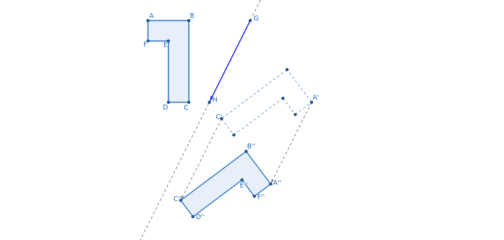

Each of the transformations we have studied so far, reflections, translations, and rotations, performs an action on the points of the plane. In fact, a transformation is a function where the inputs and outputs are geometric objects instead of numbers. In algebra, you learned about the “add three” function, written \(f(x)=x+3\text{,}\) and the “multiply by four” function, \(g(x)=4x\text{.}\) You also learned that you could perform two functions in succession. For example, you could perform the “add three” function on the number \(1\) and then perform the “multiply by 4” function on the result.
In function notation, we may write \(g(f(1))=g(1+3)=g(4)=4(4)=16\) where we perform the inner function first. We may also perform these operations on a generic value \(x\text{:}\)
We now explore what happens when we compose geometric transformations. We could compose any two transformations, but we will first focus on reflections. What happens when we perform two or more reflections in succession? Do we get another reflection? Does it matter whether the lines are parallel? Does the order in which we perform the reflections matter?
Definition4.4.1.
A composition of two transformations is a sequence of two transformations, \(s\) and \(t\text{,}\) performed in succession. To find the image of a point \(P\) under the composition, \(s\) followed by \(t\text{,}\) written \(t(s(P))\text{,}\) one first finds the image \(P'\) of \(P\) under the action of \(s\) and then finds the image \(P''\) of \(P'\) under \(t\text{.}\)
\begin{equation*}
P \overset{s}\rightarrow s(P)=P' \overset{t}\rightarrow t(P')=P''.
\end{equation*}
Note that in the composition \(P \rightarrow s(t(P))\text{,}\) we perform the inside function \(t\) before the outer function \(s\text{.}\)
Exploration4.4.1.Reflecting across Parallel Lines.
(a)
First we explore what happens when you reflect an object first across line \(g\) and then across line \(h\) where \(g\) and \(h\) are parallel.
Use the ‘Reflect across Line’ tool to reflect pentomino \(ABCDEF\) across line \(g\) in Figure 4.4.2 to create pentomino \(A'B'C'D'E'F'\text{.}\)
Then reflect the new pentomino \(A'B'C'D'E'F'\) across line \(h\) to form pentomino \(A''B''C''D''E''F''\text{.}\)
Figure4.4.2.An interactive Geogebra applet for reflecting across parallel lines.
(b)
Refer to the original pentomino \(ABCDEF\) and its final image after reflecting across the two parallel lines \(g\) and \(h\) in Figure 4.4.2.
For the remainder of this activity, we will only be interested in the original pentomino \(ABCDEF\) and the final image \(A''B''C''D''E''F''\text{.}\) You may hide the intermediate objects so that it is easier to focus on \(ABCDEF\) and \(A''B''C''D''E''F''\) by right-clicking on each object and then unchecking ‘show object’. Another option found by right-clicking is to change the color of the object. Do not delete any intermediate construction as it will cause later constructions to also be deleted. If you delete accidentally, use the undo arrow on the right end of the toolbar to recover your work.
What type of isometry takes \(ABCDEF\) to \(A''B''C''D''E''F''\text{?}\) Is it a reflection, a translation, a rotation, or something else?
Draw the segments \(\overline{AA''}, \overline{BB''}, \ldots, \overline{FF''}\) and measure the lengths \(AA'', BB'', \ldots, FF''\text{.}\) What do you notice?
What do you notice about the angle between each segment, \(\overline{AA''}, \overline{BB''},
\ldots, \overline{FF''}\) and the original two lines \(g\) and \(h\text{?}\)
Measure the distance between the original pair of reflecting lines \(g\) and \(h\text{.}\) Be sure to use a segment perpendicular to both lines to measure along. What do you notice?
Hint.
For a smaller font, measure the segment, not the distance between points.
(c)
Each type of isometry has a special object or two that helps to determine it precisely. As shown in Table 4.3.7, a reflection has a reflecting line, a translation has a vector, and a rotation has a center and angle. Identify and draw in the specific line, vector, or center and angle for this transformation. How does this object relate to the parallel reflecting lines \(g\) and \(h\text{?}\) Verify your answer using the transformation tools in geogebra.
(d)
A second copy of the GeoGebra app for reflecting across parallel lines is provided in Figure 4.4.3. This time reflect \(ABCDEF\) first across line \(h\) and then reflect the result across line \(g\text{.}\) How does the result compare to what happened when we reflected across g before h? Where is \(A''B''C''D''E''F''\text{?}\) Have any of the distances or angles changed?
Figure4.4.3.An interactive Geogebra applet for reflecting across parallel lines.
In the next exploration, we will perform a similar experiment reflecting an object across two intersecting lines in succession.
Exploration4.4.2.Reflecting across intersecting lines.
(a)
Now we explore what happens when you reflect an object first across line \(g\) and then across line \(h\) where \(g\) and \(h\) intersect.
Use the ‘reflect across line’ tool to reflect pentomino \(ABCDEF\) across line \(g\) in Figure 4.4.4 to create pentomino \(A'B'C'D'E'F'\text{.}\)
Then reflect the new pentomino \(A'B'C'D'E'F'\) across line \(h\) to form pentomino \(A''B''C''D''E''F''\text{.}\)
Figure4.4.4.An interactive Geogebra applet for reflecting across intersecting lines.
(b)
Refer to the original pentomino \(ABCDEF\) and its image \(A''B''C''D''E''F''\) after reflecting across intersecting lines \(g\) and \(h\) in Figure 4.4.4. You may want to hide the intermediate figure \(A'B'C'D'E'F'\text{.}\)
What type of isometry takes \(ABCDEF\) to the final image \(A''B''C''D''E''F''\text{?}\) Is it a reflection, a translation, a rotation, or something else?
Draw the segments \(\overline{AA''}, \overline{BB''}, \ldots,
\overline{FF''}\text{.}\) What, if anything, do you notice?
Create the perpendicular bisector of each segment \(\overline{AA''},
\overline{BB''}, \ldots, \overline{FF''}\text{.}\) What do you notice about the perpendicular bisectors?
Each type of translation has a special object or two that helps to determine it precisely. Identify and draw in the specific line, vector, or center and angle for this transformation, referring to Table 4.3.7 as needed. How does the object(s) relate to the intersecting reflecting lines \(g\) and \(h\text{?}\)
Create point \(M\) where the original two lines intersect. What is the measure of \(\angle A''MA\text{?}\)\(\angle B''MB\text{?}\)\(\angle C''MC\text{?}\)\(\angle D''MD\text{?}\)\(\angle E''ME\text{?}\)\(\angle F''MF\text{?}\) What does this tell you about the transformation taking \(ABCDEF\) to \(A''B''C''D''E''F''\text{?}\)
Measure the angles created by the original pair of intersecting lines \(g\) and \(h\text{.}\) What do you notice?
Measure the lengths \(AM\text{,}\)\(A''M\text{,}\)\(BM\text{,}\)\(B''M\text{,}\) etc. What do you notice?
(c)
A second copy of the GeoGebra app for reflecting across intersecting lines is provided in Figure 4.4.5. This time reflect \(ABCDEF\) first across line \(h\) and then reflect the result across line \(g\text{.}\) How does the result compare to what happened when we reflected across g before h? Where is \(A''B''C''D''E''F''\text{?}\) Have any of the lengths or angles changed?
Figure4.4.5.An interactive Geogebra applet for reflecting across intersecting lines.
Next we will explore what happens when we reflect across three lines in succession. Once again, we will consider the case where the lines are parallel and when they intersect. Will we get the same transformations as before or might these be something different?
Exploration4.4.3.Reflecting across three lines.
(a)Orientation.
Recall that a reflection across a single line reverses the orientation.
What happens to the orientation when you reflect an object across two lines in succession?
If you were to reflect the object across a third line, what would you expect to happen to the orientation?
(b)Reflecting across three parallel lines.
Reflect the triangle in Figure 4.4.6 across lines \(d\text{,}\)\(e\text{,}\) and \(f\) in succession.
What type of single transformation (reflection, translation, rotation, or something else) takes the original triangle to the final image?
Each type of translation has a special object or two that helps to determine it precisely. Identify and draw in the specific line, vector, or center and angle for this transformation. How, if at all, is this object related to the three lines \(d\text{,}\)\(e\text{,}\) and \(f\text{?}\)
Figure4.4.6.An interactive Geogebra applet for reflecting across three parallel lines.
(c)Reflecting across three intersecting lines.
Finally, we reflect the triangle across three lines, at least some of which intersect. Use the ‘Reflect about Line’ tool to reflect \(\Delta ABC\) across \(d\text{,}\) then reflect its image \(\Delta A'B'C'\) across line \(e\text{,}\) and finally reflect \(\Delta A''B''C''\) across \(f\text{.}\) After creating \(\Delta A'''B'''C'''\text{,}\) you should hide the two intermediate triangles \(\Delta A'B'C'\) and \(\Delta A''B''C''\) and their vertices.
Figure4.4.7.An interactive Geogebra applet for reflecting across three intersecting lines.
Is the orientation of the figure the same or changed under the single transformation that takes \(\Delta ABC\) to \(\Delta A'''B'''C'''\text{?}\)
Explain how you know that this transformation is not a reflection.
Explain how you know that this transformation is not a translation.
Explain how you know that this transformation is not a rotation.
Hide, but do not delete, lines \(d\text{,}\)\(e\text{,}\) and \(f\text{.}\) Plot the midpoint of each of the line segments, \(\overline{AA'''}\text{,}\)\(\overline{BB'''}\text{,}\) and \(\overline{CC'''}\text{.}\) What do you notice about these midpoints?
Draw the line that passes through the midpoints of \(\overline{AA'''}\) and \(\overline{BB'''}\text{.}\) Then reflect \(\Delta ABC\) across this line. What do you notice about the relationship between this new triangle \(\Delta A_1'B_1'C_1'\) and \(\Delta A'''B'''C'''\text{?}\)
Describe a two-transformation process that takes \(\Delta ABC\) to \(\Delta A'''B'''C'''\text{.}\)
Subsection4.4.2The Four Isometries
In this chapter, we’ve explored the behavior of a particular type of transformation, called an isometry. This term comes from the Greek words “iso-” meaning “equality” and “metria” meaning “measure”.
Definition4.4.8.
An isometry is a function taking points on the plane to points on the plane which sends collinear points to collinear points and preserves the distance between points.
There are four types of isometries. Through our explorations, we have seen that the orientation of a figure is reversed each time it is reflected. Thus, orientation is changed under an odd number of reflections and maintained (flipped back) under an even number of reflections. Hence, the composition of two reflections in succession will be either a translation (when the reflecting lines are parallel) or a rotation (when the reflecting lines intersect). When we reflect across three lines, not all of which are parallel, we get an isometry which reverses the orientation of figures but is not a reflection. Instead we obtain what is known as a glide reflection.
A glide reflection is defined as a composition of a reflection across a line and a translation along a vector parallel to (or on) the reflecting line. In Figure 4.4.9, note how the pentomino is first reflected across the line and then translated along vector \(\overrightarrow{GH}\text{.}\) Any of the parallel vectors, like \(\overrightarrow{A'A''}\) or \(\overrightarrow{CC''}\text{,}\) could be used as the translation vector, but the reflecting line here is \(\overleftrightarrow{GH}\text{,}\) not \(\overleftrightarrow{CC''}\text{.}\)

Figure4.4.9.Glide reflection of a pentamino.
Checkpoint4.4.10.Reflective Question.
Will a glide reflection have any fixed point(s)? How do you know?